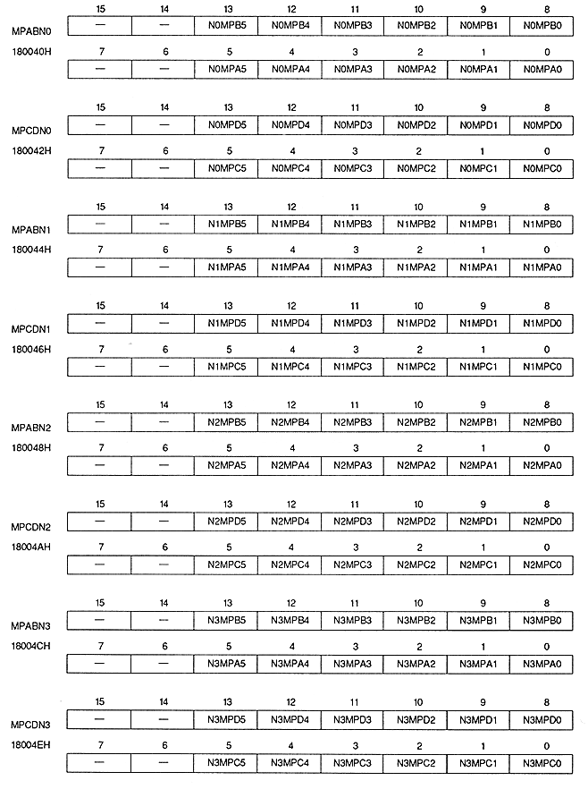

Return to previous page ｜ Return to menu ｜ Go to next page
-
■ Normal scroll screen map register
- Normal scroll screen map register specifies the top address of the pattern name table for each plane when the normal scroll screen is displayed in cell format. This is a write-only 16-bit register located at addresses 180040H to 18004EH. The value is cleared to 0 after power-on or reset, so be sure to set it.

Return to previous page ｜ Return to menu ｜ Go to next page